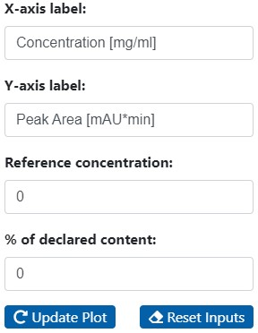
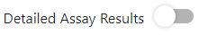

In the "Import Data" tab, enter your data file.The file format is
restricted to .csv, .tsv and single sheet .xlsx. The data has to be
structured in a stacked format (see
template).
In the next steps, specify the columns that contain the corresponding
data.
Confirm your entries and start the calculations by pressing the "Calculate"
button.
Results
The calculated results can be viewed in the "Results" section under the
corresponding tab.
The settings of the plot can be changed by clicking on the "Plot
Settings" button.
If the reference concentration is set to 0 it is not displayed in the
plot. Reference concentration and % of declared content are also used for
the calculation of some sections in the linear regression results. If
reference concentration, % of declared content or both are set to 0, the
respective sections are not included in the results table. The "Update Plot"
button is used to update the plot and the "Reset Input" button resets all
inputs in the plot settings to their default values. The plot is not
automatically updated by pressing the "Reset Input" button. For this, the
"Update Plot" button must be pressed afterwards.

Report
Finally, the results can be downloaded in tabular form as a .docx file in
the "Download Report" tab.
Decide between a simplified and a detailed table of the assay results. If
the option "Detailed Assay Results" is selected, a column with information
about the concentration levels must be included in the uploaded data set.

Enter a file name and optionally provide concentration level information
if the "Detailed Assay Results" option is selected. Tick the boxes for all
results and plots to be included in the report.
Confirm your entries and download the report by pressing the "Generate
Report" button.